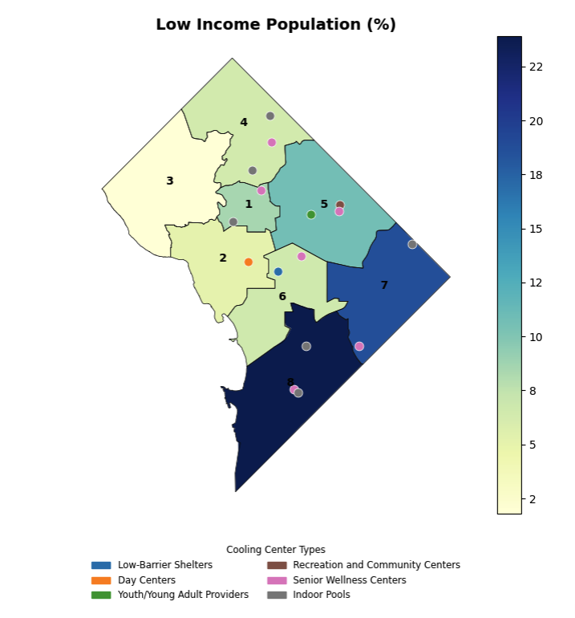

import pandas as pd
import shiny
import geopandas as gpd
import matplotlib.pyplot as plt
from shiny import App, render, ui, reactive
from matplotlib.colors import ListedColormap
from matplotlib.patches import Patch
from matplotlib.ticker import FormatStrFormatter
import numpy as np
import os
# ========================================================
# Loading Datasets & Cleaning
# ========================================================
# Yuna
path = "/Users/yunabaek/Desktop/3. Python II/final_project/Data"
# Sumner
# path = r"C:\Users\12019\OneDrive - The University of Chicago\Documents\GitHub\final_project\Data\"
# Mithila
# path = "/Users/mithilaiyer/Documents/GitHub/final_project/shp"
# Cooling center
centers_fp = os.path.join(path, "Cooling/Cooling_Centers_-_District_of_Columbia.shp")
cooling_centers = gpd.read_file(centers_fp)
clean_cc = cooling_centers[(cooling_centers["USER_Open_"] == "All") & (~cooling_centers["USER_Hours"].str.contains('closed', case=False, na=False))]
empty_DC = gpd.read_file(os.path.join(path, "Wards_from_2022/Wards_from_2022.shp"))
# Heat data + cooling centers data + ward data
heat_dc = gpd.read_file(os.path.join(path, "Heat_Sensitivity_Exposure_Index.shp"))
cc_dc = gpd.read_file(os.path.join(path, "Cooling_Centers_-_District_of_Columbia.shp"))
wards_dc = gpd.read_file(os.path.join(path, "Wards_from_2022.shp"))
cc_dc = cc_dc.to_crs(heat_dc.crs)
#Variable cleaning
heat_dc['HSI'] = heat_dc['HSI'].apply(lambda x: x if str(x).startswith('0') else np.nan)
heat_dc['ASTHMA'] = heat_dc['ASTHMA'].round(1)
# POC, elderly
acs_shp = gpd.read_file(os.path.join(path, "ACS_5-Year_Demographic_Characteristics_DC_Census_Tract/ACS_5-Year_Demographic_Characteristics_DC_Census_Tract.shp"))
acs_shp = acs_shp.to_crs(empty_DC.crs)
acs_shp['poc'] = (acs_shp['DP05_0033E'] - acs_shp['DP05_0079E'])*100 / acs_shp['DP05_0033E']
acs_shp['elderly'] = acs_shp['DP05_0024E']*100 / acs_shp['DP05_0001E']
# Disability
social_shp = gpd.read_file(os.path.join(path,"ACS_5-Year_Social_Characteristics_DC_Census_Tract/ACS_5-Year_Social_Characteristics_DC_Census_Tract.shp"))
social_shp['disability'] = social_shp['DP02_0072E']*100 / social_shp['DP02_0071E']
# Poverty
poverty_shp = gpd.read_file(os.path.join(path, "cleaned_poverty_ward.shp"))
#Clean CC dataset
clean_cc = cooling_centers[(cooling_centers["USER_Open_"] == "All") & (~cooling_centers["USER_Hours"].str.contains('closed', case=False, na=False))]
#Create the CC type options
cc_types = clean_cc["USER_Type"].unique().tolist()
types_select = cc_types
#Create a color map for each CC type option
color_map = plt.get_cmap("tab10")
type_colors = {c_type: color_map(i / len(cc_types)) for i, c_type in enumerate(cc_types)}
# ========================================================
# Creating Shiny App
# ========================================================
app_ui = ui.page_sidebar(
ui.sidebar(
ui.input_radio_buttons(
id="social_plot_selector",
label="Select Social Plot:",
choices={
"poc": "People of Color",
"elderly": "Elderly Population",
"poverty" : "Low Income",
"disability": "Population with Disabilities",
"asthma": "Asthma"
},
selected="poc"
),
ui.input_radio_buttons(
id="environmental_plot_selector",
label="Select Environmental Plot:",
choices={
"HEI": "Heat Exposure Index",
"HSI": "Heat Sensitivity Index",
"P_TREECOVE": "Tree Cover"
},
selected="HEI"
),
ui.input_checkbox_group(
id="center_type",
label="Select type of center (multiple allowed):",
choices=types_select,
selected=types_select,
),
ui.input_switch(
id="toggle_ward",
label="Show Ward Information",
value=False
),
title="Plot Layers",
),
ui.layout_columns(
ui.card(
ui.card_header("Environmental Factors"),
ui.output_plot("environ_plot"),
full_screen=True,
),
ui.card(
ui.card_header("Social Factors"),
ui.output_plot("social_plot"),
full_screen=True,
),
),
ui.include_css(os.path.join(path, "styles.css")),
title="Cooling Centers in DC Dashboard",
fillable=True,
)
def server(input, output, session):
@reactive.calc
def center_subset():
"""Filter cooling centers based on user selection."""
if "All" in input.center_type():
return clean_cc
return clean_cc[clean_cc["USER_Type"].isin(input.center_type())]
def add_borders_and_labels(ax):
"""Add ward borders and labels if toggle is enabled."""
if input.toggle_ward():
# Add ward borders
empty_DC.plot(ax=ax, edgecolor="black", facecolor="none", linewidth=0.5)
# Add ward labels
empty_DC["centroid"] = empty_DC.geometry.centroid
for idx, row in empty_DC.iterrows():
ax.text(
row["centroid"].x,
row["centroid"].y,
str(row["WARD"]),
fontsize=10,
ha="center",
color="black",
fontweight="bold",
)
def add_cooling_centers(ax):
"""Add cooling center points on top of the map."""
selected_df = center_subset()
if selected_df.empty:
return # Do nothing if there are no selected cooling centers
# Align CRS
selected_df = selected_df.to_crs(empty_DC.crs)
# Plot cooling center points by type using type_colors
for c_type, color in type_colors.items():
subset = selected_df[selected_df["USER_Type"] == c_type]
if not subset.empty:
subset.plot(
ax=ax,
color="white",
markersize=55,
alpha=1.0,
label=None
)
# Plot actual dot
subset.plot(
ax=ax,
color=color, # Use color from type_colors
markersize=40, # Original size for the dot
alpha=1.0,
label=c_type
)
def add_legend(ax, selected_df):
"""Add legend at the bottom center of the plot."""
unique_types = selected_df["USER_Type"].unique()
legend_patches = [
Patch(color=type_colors[type_], label=type_)
for type_ in unique_types if type_ in type_colors
]
ax.legend(
handles=legend_patches,
title="Cooling Center Types",
loc="lower center",
bbox_to_anchor=(0.5, -0.2),
ncol=2,
fontsize="small",
title_fontsize="small",
frameon=False,
)
@render.plot
def environ_plot():
selected_env_plot = input.environmental_plot_selector()
fig, ax = plt.subplots(figsize=(10, 8))
if selected_env_plot == "HEI":
heat_dc.plot(column="HEI", cmap="viridis", alpha=0.8, legend=True, ax=ax, edgecolor="0.8", linewidth=0.5)
ax.set_title("Heat Exposure Index", fontsize=14, fontweight="bold")
elif selected_env_plot == "HSI":
heat_dc.plot(column="HSI", cmap="coolwarm", legend=True, ax=ax, edgecolor="0.8", linewidth=0.5)
ax.set_title("Heat Sensitivity Index", fontsize=14, fontweight="bold")
elif selected_env_plot == "P_TREECOVE":
heat_dc.plot(column="P_TREECOVE", cmap="Greens", legend=True, ax=ax, edgecolor="0.8", linewidth=0.5)
ax.set_title("Tree Cover", fontsize=14, fontweight="bold")
add_borders_and_labels(ax)
add_cooling_centers(ax)
selected_df = center_subset()
if not selected_df.empty:
add_legend(ax, selected_df)
ax.set_axis_off()
plt.tight_layout()
return fig
@render.plot
def social_plot():
selected_social_plot = input.social_plot_selector()
fig, ax = plt.subplots(figsize=(10, 8))
if selected_social_plot == "poc":
acs_shp.plot(column="poc", cmap="YlGnBu", alpha=0.8, legend=True, ax=ax, edgecolor="0.8", linewidth=0.2)
ax.set_title("People of Color (%)", fontsize=14, fontweight="bold")
elif selected_social_plot == "poverty":
poverty_shp.plot(column='poverty', cmap="YlGnBu", legend=True, ax=ax, edgecolor="0.8", linewidth=0.2)
ax.set_title("Low Income Population (%)", fontsize=14, fontweight="bold")
cbar = ax.get_figure().axes[-1] # Access the colorbar axis
cbar.yaxis.set_major_formatter(FormatStrFormatter('%.0f'))
elif selected_social_plot == "elderly":
acs_shp.plot(column="elderly", cmap="YlGnBu", legend=True, ax=ax, edgecolor="0.8", linewidth=0.2)
ax.set_title("Population of Older Adults (%)", fontsize=14, fontweight="bold")
elif selected_social_plot == "disability":
social_shp.plot(column="disability", cmap="YlGnBu", legend=True, ax=ax, edgecolor="0.8", linewidth=0.2)
ax.set_title("Population with Disabilities (%)", fontsize=14, fontweight="bold")
elif selected_social_plot == "asthma":
heat_dc.plot(column="ASTHMA", cmap="Reds", legend=True, ax=ax, edgecolor="0.8", linewidth=0.5)
ax.set_title("Asthma (%)", fontsize=14, fontweight="bold")
add_borders_and_labels(ax)
add_cooling_centers(ax)
selected_df = center_subset()
if not selected_df.empty:
add_legend(ax, selected_df)
ax.set_axis_off()
plt.tight_layout()
return fig
app = shiny.App(app_ui, server)Hot To Go-Go: Cooling Centers in DC
Github Usernames: yunabaek122, mithilaiyer, sumnerper
Section: 1 (all group members)
Background
As temperatures rise, US cities will experience extreme heat and a need to protect their residents under these conditions. Cities often face an “Urban Heat Island Effect” where man made structures and a lack of trees and vegetation, make urban regions hotter than the suburbs (Keep Cool DC, 2022). Many cities employ the use of cooling centers, which are air-conditioned publicly accessible buildings, in their extreme heat adaptation strategies. According to one study Washington DC ranked highest in accessibility among 81 US cities (Adams et al 2023). DC has experienced rising temperatures at nearly an entire degree per decade and expects the number of heat days to triple by 2050 (Keep Cool DC, 2022). Their current strategy activates cooling centers when the heat index reaches 95℉ and they have 137 centers across the city.
Research Question & Datasets
A map of DC cooling centers suggests wide distribution of centers across city wards and a variety of center types for residents to choose from (2024 Cooling Center Map). Using this information we wanted to investigate whether existing cooling centers in DC equitably meet the needs of its residents and more specifically, if they protect resident subgroups (i.e. low-income residents, elderly population, etc.) who are disproportionately impacted by extreme heat. In order to do this we drew upon existing heat index and heat sensitivity maps and their datasets, and cooling center data. Our data falls into three buckets: demographics, environmental, and geographic.
Demographics: Demographic data, including the percentage of people of color (POC), older adults (65+), low-income populations, and individuals with disabilities, were sourced from the American Community Survey (ACS). The data was processed to calculate percentages for each demographic and visualized as a choropleth map to show the density of these populations across different regions. Low-income data had to be accessed and presented at the ward level due to the unavailability of shapefile and geospatial data.
Environmental: We used the Heat Sensitivity Exposure Index (2022) dataset compiled by a consulting firm called Cadmus for the DC Department of Energy. We used the Heat Sensitivity Index (HSI), the Heat Exposure Index (HEI), asthma, and tree coverage variables. The HSI includes six socio-economic and demographic variables and three health variables: people of color, elderly, children, low-income, disability, English proficiency, adults with asthma, adults with obesity, and adults with heart disease. The HEI includes ambient air temperature, impervious surfaces (e.g. roads, buildings), and tree canopy cover. The tree coverage variable extracts tree canopy cover from a raster dataset via the DC Department of Transportation, and the asthma indicator is derived from a CDC Places dataset.
Geographic: We used the 2022 Election Wards dataset and the 2024 Cooling Centers dataset which are both publicly available through the DC Government Open Data portal. We chose to filter for cooling centers that were not closed and open to all genders. We chose to consider all gender facilities under the premise that full accessibility means co-gendered spaces that are also open to non-binary gendered individuals. This reduced the number of Low-Barrier Shelters and Day Centers significantly.
Static Plots and Shiny App

The distribution of dots across the map of DC may suggest a uniform spread of cooling centers, but a closer analysis of the choropleths reveals important disparities. The HEI plot indicates that areas in the central part of the city are more exposed to heat. HSI has an opposite trend, with wards 7 and 8, which have higher concentrations of low-income populations and people of color, appearing to be more vulnerable to heat. This suggests that the central areas may have better infrastructure to mitigate heat, while the neighborhoods with higher vulnerability are underserved. When we exclude layers showing public libraries and spray parks, the disparity in access to low-barrier cooling centers becomes even more evident. Wards 7 and 8 are particularly underserved in terms of accessible cooling centers. This issue becomes even more concerning when we focus on locations with fewer entry requirements such as low-barrier facilities and day centers, as there are none available in Wards 7 and 8.

Individuals with pre-existing respiratory conditions are particularly vulnerable to extreme heat (Asthma and Allergy Foundation of America, 2024). We chose to compare a map of the HSI with a map of asthma prevalence in DC in order to examine the correlation between sensitivity and conditions that could be worsened by high levels of heat. We find that Wards 7 and 8 are the most sensitive to heat - a factor that is amplified by the high incidences of asthma in their populations.
Seniors are disproportionately vulnerable to rising temperatures (Harvard Medicine, 2021). The above plot indicates that while DC has several centers specifically for this subgroup, there is an inconsistency between their distributions and the concentration of older adults within wards. For example, Wards 4 and 6 do not have their centers located closer to where the most seniors live, raising concerns about accessibility especially in terms of mobility.
Policy Implications of Findings
Adverse Health Impacts: There is significant correlation between regions that have a high percent of adults with asthma and a higher HSI (Wards 7 and 8) but not many specialized cooling centers for populations that would be disproportionately impacted by heat-related health conditions. Elderly people are amongst the most vulnerable to effects of extreme heat but also struggle to perceive that they are (Bedi et al 2023). Cooling centers therefore not only act as centers of refuge but also can be preventative vehicles of health safety and education for vulnerable populations.
Infrastructure: The static plot comparison between HEI and Low-Income populations across the city reveal that Wards 7 and 8 with the highest percent of low-income residents have moderate HEI. Despite this, the HSI for these wards are the highest which is cause for concern and may suggest opportunity for new green infrastructure developments that reduces the HEI. For example, covered bus stations or private properties such as malls or coffee shops which residents already turn to for cooling needs.
Vulnerable Populations: The static plot of the elderly population across the city with senior wellness centers overlaid reveals less than adequate coverage of these specialized centers by high density regions. In some cases there are public libraries available beside these regions which makes it difficult to determine whether these specialized cooling centers are being used effectively, whether other cooling centers can be considered substitutes, and whether more specialized centers should be established or not.
Areas for Future Research
We believe that cooling center utilization, visitation data, and operations can be immediate areas for future research. 51% of interview respondents never visit a cooling center on extreme heat days (Keep Cool DC, 2022). Future exploration into transportation data, age, and use of privately owned places may hold some answers. Additionally, by exploring cooling center visitation data researchers can determine whether specialized centers are used as intended or should be scaled in size or number. Lastly, an analysis of operations data at cooling centers such as energy costs, safety, cleanliness, and maintenance, and formal designation of the centers can help policymakers determine if DC’s 137 centers are functional and prepared to serve as places of refuge when temperatures soar.